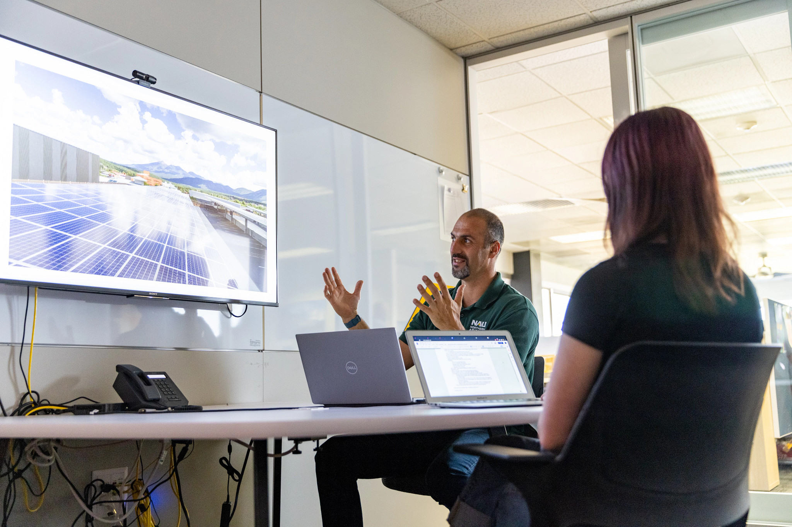

Graduate Certificates
 SES Graduate Certificate Programs
SES Graduate Certificate Programs
Program Overview
- Format: Online certificate program
- Credits: 12 total credit hours
- Duration: Four 8-week courses over two semesters
- Delivery: Asynchronous Online format
Program Description
The Graduate Certificate in Greenhouse Gas Accounting is designed for students who want to develop expertise in greenhouse gas accounting, emissions quantification, and carbon management strategies. This program provides comprehensive training in the technical and business aspects of greenhouse gas emissions management.
The GHG Accounting Certificate trains you to:
- Identify, manage, and track activity data for greenhouse gas emission calculations, and apply and/or derive appropriate emission factors for that activity data.
- Quantify and report greenhouse gas emissions associated with individual products or commodities, business/corporation operations, and communities using appropriate protocols and standards.
- Verify the greenhouse gas emissions reported by others using recognized standards and procedures.
- Use reported GHG emissions, together with appropriate economic metrics, to design and justify effective emission management, reduction, and mitigation strategies.
- Communicate findings of greenhouse gas inventory, emission trends over time, and/or emission reduction recommendations using multiple methods such as written reports, professional presentations, or oral/written press releases.
Certificate Curriculum
EES 591: Foundations in GHG Accounting I
Introduces you to the field of greenhouse gas (GHG) emissions accounting. You will learn the basic skills and techniques needed to create GHG emissions inventories for corporations and organizations, including direct emissions from combustion of stationary and mobile sources (e.g., Scope 1) and indirect emissions from purchased electricity (e.g., Scope 2). This is the first course in a series of 4 courses that satisfy the requirements for the Certificate in GHG Accounting.
EES 592: Foundations in GHG Accounting II
Builds off the concepts learned in Foundations in GHG Accounting I and introduces more advanced GHG accounting methods and approaches, including the market-based approach for Scope 2 emissions accounting and estimation methods for filling gaps in activity data. This is the second course in a series of 4 courses that satisfy the requirements for the Certificate in GHG Accounting.
EES 593: Value-Chain GHG Accounting
Introduces you the methods and skills needed to quantify Scope 3 or value-chain emissions for an organization following globally-accepted standards and frameworks, as well as how to quantify the life-cycle emissions associated with a specific product. Scope 3 emissions are indirect emissions that occur as a result of activities outside of an organization’s own operations, but often represent a company’s largest source of emissions. This is the third course in a series of 4 courses that satisfy the requirements for the Certificate in GHG Accounting.
EES 594: GHG Mitigation and Management
Introduces you to the best practices for designing emission reduction goals, evaluating the business case for GHG mitigation/management projects, and assessing the impacts of GHG emission reductions projects to ensure they achieving their intended goals. This course builds off the foundation developed in the first three courses of the certificate. It is the final course in the Certificate in GHG Accounting.
Career Opportunities

Graduates of the GHG Accounting Certificate will advance their careers in high-demand sustainability fields, such as:
Carbon Analyst
- Conduct organizational carbon footprint assessments
- Develop emissions reduction strategies
- Monitor and report on climate performance
- Support sustainability reporting and disclosure
Emissions Reduction Specialist
- Identify and evaluate emission reduction opportunities
- Implement energy efficiency and renewable energy projects
- Manage carbon offset procurement and retirement
- Coordinate with internal teams on climate initiatives
Consulting Professional
- Provide GHG accounting services to client organizations
- Conduct climate risk assessments
- Develop climate action plans
- Support regulatory compliance and voluntary reporting
Corporate Sustainability Manager
- Lead organizational sustainability initiatives
- Manage ESG (Environmental, Social, Governance) reporting
- Engage with stakeholders on climate commitments
- Coordinate with executive leadership on climate strategy
Testimonials from Graduates of Certificate Program
-
Caitlin Brogan: “The certificate program provides hands-on, applied practice with the techniques needed to dive into the professional GHG Accounting world. Each module provides the resources and support needed to build a foundational understanding of the week’s topic, but then challenges you to test that understanding with real-world inventory activities. This innovative program focuses on the flexible problem-solving skills that help students go on to be successful in diverse work environments.” Dani Logan: “This program has helped me so much to stand out for future job opportunities. Deborah Huntzinger is also an amazing professor. It gave me structured content and specific knowledge that helped me secure my current position.”
-
Mary Beth Bayruns: “The GHG Accounting Certificate provided me with essential knowledge of GHG accounting concepts and practice with real data. This certificate program is a gateway to an increasingly in-demand career. It strengthened my data analysis skills and provided me with insight into an emerging field within sustainability.” Hailey Baker: “The certificate directly contributed to me landing two internships related to GHG accounting and climate consulting. I was able to intelligently respond to interview questions, design and lead a company’s first GHG inventory, and complete advanced Excel tasks for inventory calculations. Based on conversations with industry professionals, having a strong background in GHG accounting is extremely valuable. I would absolutely encourage you to pursue the certificate because there is no other comparable training program out there that is as in depth as this certificate program. I have used every single skill I learned in the certificate in my work. The design of this program really supports learning.”
-
Charles Linkenheil: “NAU’s graduate certificate in GHG Accounting more than prepared me for a career as a carbon analyst. We learned both the fundamentals of conducting a variety of greenhouse gas inventories using real world data, learned about renewable energy markets and market-based calculations, dove headfirst down the Scope 3 emissions value chain rabbit hole, and finally learned all about greenhouse mitigation strategies and decision-making processes. It is a challenging certificate but I feel more than capable working in the real world. I cannot recommend this graduate certificate enough! If you are interested in being on the frontlines of emissions reductions and climate change mitigation this is the graduate certificate for you! You’ll learn all of the fundamentals and many of the nuances of GHG accounting with real world data and scenarios. Debbie is a fantastic mentor who knows this stuff inside and out! This certificate has been the best part of my graduate school education.”
-
Noah Humphrey: ”This program gave me great real-world insight into the carbon accounting world, and taught me a new perspective in looking at how crucial carbon markets are for shaping our future world. This short yet dense program can provide anyone who is willing to learn, the skills and confidence needed to be a carbon analyst or simply understand how carbon markets impact every sector.
-
Mackin Von Schipmann: “This certificate has been invaluable to my education. I have never had a teacher who has been so open and willing to help, explain, and hear feedback. It is also so easily accessible being online so that you can do a majority of the coursework at your own pace.”
-
Dani Logan: “This program has helped me so much to stand out for future job opportunities. Deborah Huntzinger is also an amazing professor. It gave me structured content and specific knowledge that helped me secure my current position.”
Admission Requirements
- Undergraduate Degree: Bachelor’s degree from an accredited institution
- GPA Requirement: Minimum 3.0 cumulative GPA
- Find out more information about the Certificate here
Application Process
Complete online application
Application Deadlines
- Rolling Admissions: Applications reviewed on ongoing basis
- Fall Start: The Graduate Certificate in GHG Accounting begins at the start of every Fall semester. Courses must be taken in sequence.
Contact Information
For information about the Graduate Certificate in Greenhouse Gas Accounting, including curriculum details and application procedures, please contact the Program Creator and Director, Dr. Deb Huntzinger
Email: deborah.huntzinger@nau.edu
Phone: 928-523-1669